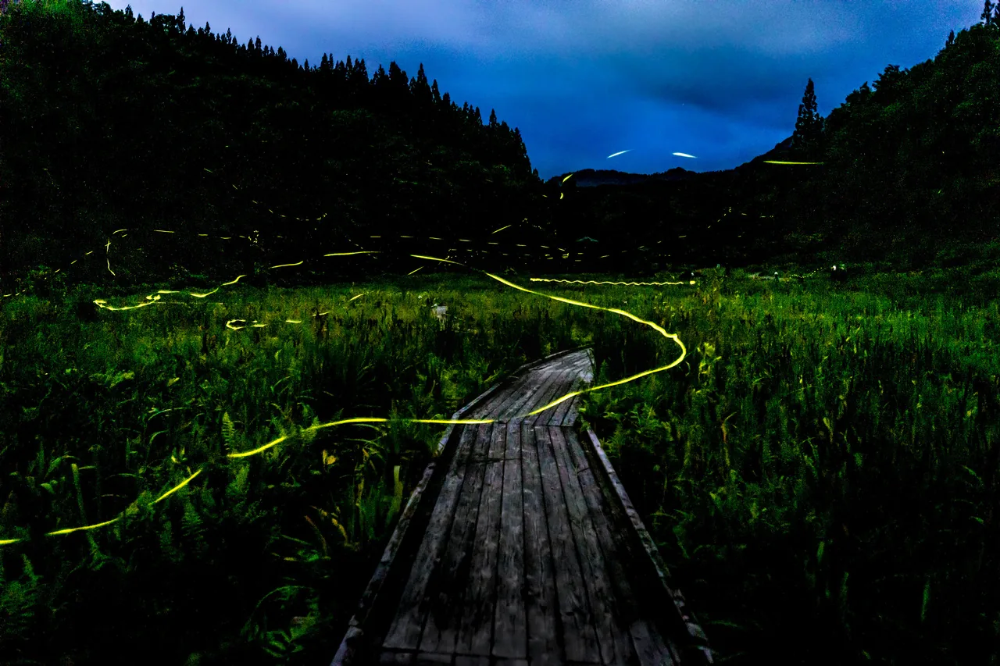

Himebotaru: the land firefly that flashes gold after midnight
Nearly everything written in English about Japanese fireflies is about one species: the Genji firefly, drifting slowly over a river at dusk in June, pulsing every two to four seconds. There is a third species that almost none of it mentions. The Hime firefly — ヒメボタル, Luciola parvula — does not live in water at all. Its larvae hunt land snails in leaf litter. Its light is gold rather than yellow-green, and it does not drift: it flashes hard, roughly twice a second, like a camera strobe in the dark. Its females have lost the wings they would need to fly. And in several of its best-known populations, none of this begins until around eleven at night. This is a naturalist's guide to the species, the numbers behind the flashes, and the places you can actually stand and watch it.

The name, and a taxonomic split
Hime (姫) means "princess," used in Japanese species names to mean "small" — so hime-botaru is roughly "the little firefly." The valid scientific name is Luciola parvula Kiesenwetter, 1874. You will also see Hotaria parvula in older literature: the species was moved into a genus Hotaria and later returned to Luciola after molecular re-examination, so Hotaria now stands as a subgenus and the species is sometimes written Luciola (Hotaria) parvula.
There is a nice irony in the recent taxonomy. In 2022 the Genji firefly was moved out of Luciola into a new genus, Nipponoluciola cruciata, erected for the Japanese fireflies with aquatic larvae. The Heike firefly had already gone to Aquatica. The Hime firefly, the terrestrial one, stayed put. In other words, the two species everyone knows have left the genus, and the one nobody writes about is the one still holding the name.
In parts of Okayama the local name is kin-botaru (金蛍), "gold firefly," given because of the golden light it throws in dense forest. Around Kinshōzan in Gifu it is called the mountain firefly.
The flash: what the numbers say
The single most useful thing to know before you go out is the rhythm, because it is how you tell the species apart in the dark without catching anything.
| Species | Male flash interval | Where |
|---|---|---|
| Hime fireflyヒメボタル · Luciola parvula | 0.5–0.8 s — a hard strobe-like pulse | Forests, bamboo groves, wooded parkland — on land |
| Genji fireflyゲンジボタル · Nipponoluciola cruciata | About 4 s in eastern Japan, about 2 s in western Japan and Kyushu, about 3 s in parts of Chūbu | Clean rivers and streams |
| Heike fireflyヘイケボタル · Aquatica lateralis | About 1 s in Hokkaido, about 0.5 s further south — weak and irregular | Rice paddies and marshy ground |
Female Hime fireflies flash back on a slower cycle — reported at 1–3 seconds in one part of Ōba's review and 2–4 seconds in another, describing the calling signal specifically. What happens next is the interesting part: a female answers roughly 0.3 seconds after a male's flash, and as the exchange continues both animals flash more and more frequently, until the pair are effectively playing catch with light.
We are giving ranges rather than a single figure because the sources genuinely differ, and the disagreement is informative. A 2023 study in Frontiers in Insect Science reports 0.7–0.8 s for large males and 0.5–0.6 s for small ones; Ōba's comparison of Hakone and Odawara populations gives about 0.8 s and about 0.4 s for the same two forms; a 2025 mitochondrial genome paper states 0.5–0.8 s overall; a Japanese firefly specialist quoted in national weather media gives 0.7–1 s. Much of the spread is real biological variation between populations and size morphs, not sloppy measurement — see below.
Why the light looks gold
Japanese sources reach consistently for the word gold — Nagoya's municipal survey describes "a golden flash," Niimi's population is named the gold firefly outright, and Fuji City describes a yellowish light going "pa, pa, pa" like a strobe. That impression has a measurable basis.
Firefly colour is set by the luciferase enzyme rather than by luciferin. Measured in vitro, the Hime firefly's luciferase has an emission peak at 568 nm; the Genji firefly's two luciferases peak at 554 and 543 nm. That places Luciola parvula among the most red-shifted fireflies known — which is exactly why the eye reads it as gold or amber next to the Genji firefly's yellow-green.
One caveat worth stating plainly: 568 nm is the emission peak of recombinant luciferase measured in the laboratory, not a spectrum taken from the light organ of a living insect. The direction of the difference is solid; treat the exact figure as an enzyme property.
The females that cannot fly
Female Hime fireflies are flightless. The precise anatomy matters, because popular summaries get it wrong: it is the hind wings that are reduced — the membranous flight wings folded under the elytra. The hardened forewings remain. Some municipal leaflets say simply "the wings are degenerate," which gives the misleading impression of a wingless insect.
The consequence is behavioural. Males fly and flash; females stay on the ground or cling to a stem or twig and signal from there. It also inverts the usual size relationship. In the Genji firefly the female is the larger sex — roughly 18 mm against the male's 15 mm. In the Hime firefly the male is larger. Males also carry light organs on two abdominal segments where females have one, and males have conspicuously large compound eyes while the female's are markedly small — the expected signature of a mating system where the flying sex does the searching.
A firefly that eats snails
Japan's two famous fireflies are unusual worldwide for having aquatic larvae. The Hime firefly is the ordinary case that Japan forgot to publicise: its larvae live on land, in leaf litter and soil.
They are predators of land snails — door snails (Clausiliidae), Allopeas awl snails, and Bekkochlamys among those recorded — and in captivity will also take earthworms and other small invertebrates. Nagoya's survey notes an unresolved problem here worth flagging: at some sites where Hime fireflies swarm in numbers, surveyors could not find land snails at all, and what those larvae are eating remains an open question.
Larvae take one to two years to reach the final instar before pupating in the soil, and the period differs between populations: reared individuals from Adatara-san in Fukushima needed two years, while the Nagoya Castle population was confirmed to emerge in one. The larvae glow too — newly hatched larvae emit a weak light when disturbed.
Habitat is broader than the "forest firefly" label suggests. Nagoya's survey states the species occurs from lowland to high ground in secondary woodland, bamboo groves, beech forest and river terraces, with some populations swarming over house gardens and open fields. A survey of 254 sites in Hyōgo Prefecture recorded them from 10 m above sea level, at a temple ruin in Amagasaki, up to 850 m in the Rokkō range.
Two sizes, two clocks
Two kinds of variation make this species harder to summarise than the textbook fireflies — and both are more interesting than a clean answer would be.
The first is size. Adults run roughly 5–10 mm depending on population and sex, and the spread is not just measurement noise: a large morph and a small morph are recognised, separated in the 2023 study at a pronotum width of 2.1 mm, with the large form about 7–9 mm long and the small form about 5–7 mm. In the hills between Odawara and Hakone the two sort by elevation, with the large form above roughly 800 m and the small form below. The smaller males flash faster.
The second is timing, and it is the one that will decide what time you set your alarm for. Populations fall into a dusk type and a midnight type. Dusk populations start around 19:30–20:00: Niimi in Okayama peaks roughly 19:45–21:00, Oritsumedake in Iwate gets going about 19:30. Midnight populations do not begin until far later: the Nagoya Castle moat runs roughly 23:00 to 03:00, and Nagoya's official survey of the Aioiyama population was conducted between 22:00 and midnight. Ōba, who documented the two types, explicitly leaves their origin as an open question — nobody yet knows why some populations shifted their whole courtship window past midnight.
Where to see it
Iwate's Oritsumedake, one of Japan's largest populations, has cancelled its 2026 firefly viewing. Bear attacks caused injuries in Ninohe and bears were sighted on the mountain itself, so the organisers cancelled to protect visitors, with no rescheduled date. The original window was 4–12 July. If you are reading this in a later year, confirm directly before travelling.
| Site | Season & time | Access & conditions |
|---|---|---|
| Appi Kōgen guided tour安比高原 · Hachimantai, Iwate | 27 June – 12 July 2026, 20:00–21:00, about one hour | The realistic option for a foreign visitor. Meet at ANA Crowne Plaza Resort Appi Kogen, Tower Building 1F. ¥2,500 age 13+, ¥2,300 age 6–12; residents of Japan ¥1,500 / ¥1,300; preschoolers free with a guardian. Book online by 17:00 the previous day. Long sleeves, long trousers and proper shoes — no sandals |
| Nagoya Castle outer moat名古屋城外堀 · Nagoya, Aichi | May to early June; roughly 23:00–03:00 | Free, on public streets along the moat between Shin-Misono-bashi and Ōtsu-bashi, centred on Honmachi-bashi. About 10 minutes on foot from Marunouchi or Nagoyajō subway stations. A volunteer group counts the fireflies nightly through the season |
| Aioiyama Ryokuchi相生山緑地 · Tenpaku-ku, Nagoya | Late May to early June; the city's own survey ran 22:00–24:00 | A 123.4 ha city green space that Nagoya describes as one of Japan's largest Hime firefly habitats. About 15 minutes' walk from Aioiyama station on the Sakura-dōri subway line. Bordered by housing — quiet is not optional |
| Senri Ryokuchi, District 4千里緑地 · Suita, Osaka | Early May to early June; roughly 20:00–22:00 (a dusk population) | Designated a Suita City natural monument on 11 April 2011 — about 193,000 m² of woodland and bamboo left as a buffer when Senri New Town was built. Around 1 km, or 20 minutes' walk, from Yamada station. Stay on the paths; no parking on the street |
| Tennō Hachiman Shrine天王八幡神社 · Niimi, Okayama | About ten days around 10 July; roughly 19:45–21:00 | Designated an Okayama Prefecture natural monument on 27 March 1959 — the oldest such designation for this species we could find. This is the population called kin-botaru. The city asks visitors not to photograph on Saturdays and Sundays |
| Kinshōzan, Myōjōrinji金生山 明星輪寺 · Ōgaki, Gifu | Reported as mid-to-late June by the prefecture; times given variously as 00:00–02:00 and 22:00–03:00 | Event days only. The temple grounds are closed at night except on scheduled observation and photography days; ¥100 per person as a conservation contribution, with a talk on the fireflies and the site's land snails. Contact the Kinshōzan preservation society at the temple, 0584-71-0124 |
Note what that table implies: several of the best sites are not places you can simply turn up to. Kinshōzan opens on event days only; Oritsumedake normally requires booking two days ahead at peak and closed entirely in 2026. The Nagoya Castle moat is the rare case that is genuinely open, free, and in a major city — which is also why it needs the most restraint from visitors.
The Nagoya Castle population, and why it exists at all
A colony of forest fireflies surviving in the moat of a castle in Japan's fourth-largest city sounds implausible, and it nearly wasn't. The population was noticed in 1975 by Takeuchi Shigenobu, a station employee on the Meitetsu Seto line, the railway that then ran along the moat. Conservation work began under specialist guidance; after Takeuchi's death in 1999 his family, friends and former pupils carried it on, and the present volunteer group formed in 2008 with around fifty members. In 1993 the city took measures to stop expressway lighting spilling into the moat. Nagoya's greenery association notes that a self-sustaining population in an urban castle moat is considered remarkable even internationally.
One detail from Ōba's account is worth keeping in mind while you stand there: the reason the fireflies could be studied at all was that after the last Seto-line train passed at 22:30, the station lights were switched off.
How to watch without harming it
Nagoya's official survey report gives two rules and, unusually, the reason for the second:
- Do not catch the fireflies.
- Do not shine a camera flash or a torch at them — because it stops males from finding the females that are glowing on the ground.
That second rule bites harder for this species than for the river fireflies. A Genji female signals from vegetation above a stream; a Hime female is flightless, low down, and small, and her signal is the only thing a searching male has to work with. Point a phone screen at her and you have removed her from the system for as long as the light is on. Keep screen brightness at minimum, use a torch only at your feet, and never use flash.
Other rules published by municipalities: stay out of undergrowth you cannot see the footing of, don't take fireflies home, watch quietly, keep to the paths, and don't park on the street. The parking one is not trivial — several sites sit in residential areas and midnight visitors are a genuine source of friction with the neighbours. At Kinshōzan the site is temple grounds, and at Niimi and Suita the habitat is a designated natural monument.
Nagoya's survey uses a neat rule for predicting first emergence: sum the daily mean temperatures from 1 February, and the fireflies appear on the day the running total passes 1050°C. In 2012 that fell on 14 May. Emergence also runs later with altitude — Fuji City attributes its unusually long season, early June to late July, to the same species emerging progressively later up the slopes of Mount Fuji and Mount Ashitaka.
The Japanese you'll actually use
| Japanese | Reading | Meaning |
|---|---|---|
| ヒメボタル | hime-botaru | Hime firefly — literally "princess firefly," meaning the small one |
| 金蛍 | kin-botaru | "gold firefly" — the local name in Niimi, Okayama |
| 陸生 | rikusei | terrestrial — as opposed to 水生 suisei, aquatic |
| 明滅 | meimetsu | flashing / blinking |
| 発光器 | hakkōki | light organ |
| 後翅 | kōshi | hind wings — the ones the female has lost |
| 天然記念物 | tennen kinenbutsu | natural monument — the legal protection several sites carry |
| 蛍狩り | hotarugari | firefly viewing (literally "firefly hunting") |
| 光害 | kōgai | light pollution |
Want these to stick? The free JLPT battle quiz drills nature and travel vocabulary like this with spaced repetition.
Start with the chemistry in why Japanese fireflies glow →, then wildlife watching region by region →, eyespots and deimatic displays → and the science of animal colour →. Explore all 47 prefectures by recorded species in Ikimono Quest.
Common questions
Q. What is the Hime firefly?
A. Luciola parvula, a small Japanese firefly whose larvae live on land rather than in water. Adults are roughly 5–10 mm, males flash gold about every 0.5–0.8 seconds, and the females cannot fly. It is the third of Japan's well-known fireflies alongside the Genji and Heike species, and by far the least written about in English.
Q. How is it different from the Genji firefly?
A. Habitat, rhythm and colour. Genji firefly larvae are aquatic and live in clean streams; Hime firefly larvae live in leaf litter and eat land snails. Genji males flash slowly — about 4 seconds apart in eastern Japan, about 2 in the west — while Hime males strobe every 0.5–0.8 seconds. The Hime firefly's luciferase peaks at a longer wavelength, 568 nm against 554 and 543 nm, which is why its light reads as gold.
Q. Why can't the females fly?
A. Their hind wings — the membranous flight wings — are reduced, though the hardened forewings remain. Females signal from the ground or from stems while males fly and search, which is also why males have much larger compound eyes and light organs on two abdominal segments rather than one.
Q. What time do they come out?
A. It depends on the population, which is the species' oddest feature. Dusk-type populations begin around 19:30–20:00, such as Niimi in Okayama. Midnight-type populations do not start until much later — the Nagoya Castle moat runs roughly 23:00 to 03:00. Researchers have documented both types but have not established why they differ.
Q. When is the season?
A. Broadly May to early August, running later at higher elevations. Nagoya predicts first emergence by summing daily mean temperatures from 1 February and taking the day the total passes 1050°C.
Q. Where can a visitor actually see them?
A. The guided tour at Appi Kōgen in Iwate is the most practical for a foreign visitor, running 27 June to 12 July 2026 from 20:00 with online booking. The Nagoya Castle outer moat is free and open but runs from about 23:00. Kinshōzan in Gifu admits visitors on scheduled event days only, and Iwate's Oritsumedake cancelled its 2026 season because of bears.
Q. Is it endemic to Japan?
A. It is recorded from Honshū, Shikoku and Kyūshū, with Kyoto's red data book also listing Yakushima, and Japanese sources generally describe it as found only in Japan. We would call it essentially endemic rather than assert strict endemism, since a small number of records outside Japan appear in international biodiversity databases and we have not been able to verify them.
Q. Can I photograph them?
A. Never with flash — it stops males locating the flightless females glowing at ground level, which is the whole mating system. Keep phone screens dim and torches pointed at your feet. Niimi asks visitors not to photograph at all on Saturdays and Sundays, and Kinshōzan restricts night access to designated photography days.
Written by naturalists. Species biology here follows the primary and technical literature: Ōba Nobuyoshi's review of Hime firefly research in the Journal of the Firefly Research Society of Japan 49: 28–34 (taxonomy, flash intervals, female wing reduction, larval diet and rearing, dusk and midnight types, size morphs by elevation); the size-morph and flash-interval analysis in Frontiers in Insect Science (2023); the flash description and species account in Mitochondrial DNA Part B (2025); luciferase emission maxima from Ohmiya et al., FEBS Letters (1996) for L. parvula and published values for the Genji firefly's LcLuc1 and LcLuc2; and Yagi Tsuyoshi's survey of 254 Hyōgo sites in Humans and Nature 18: 163–172 (2007). Site ecology, survey method, emergence prediction and viewing rules are from the City of Nagoya's Aioiyama Hime firefly survey report, Fuji City's species leaflet, the Kyoto Prefecture Red Data Book (2015), and the official pages of Suita City, Niimi City, Ōgaki City and Gifu Prefecture, Ninohe's Oritsumedake site, and Appi Kōgen. Genus changes follow the current Luciolinae revisions, under which the Genji firefly became Nipponoluciola cruciata and the Heike firefly Aquatica lateralis while parvula remained in Luciola. Where published figures conflict — adult length, male flash interval, viewing hours at individual sites — we have given the range rather than pick one. Nature is full of exceptions; that is what makes it worth studying.